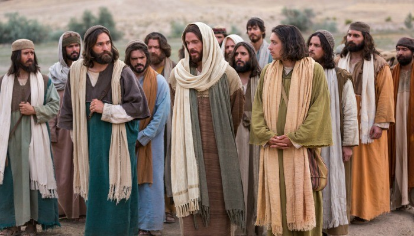
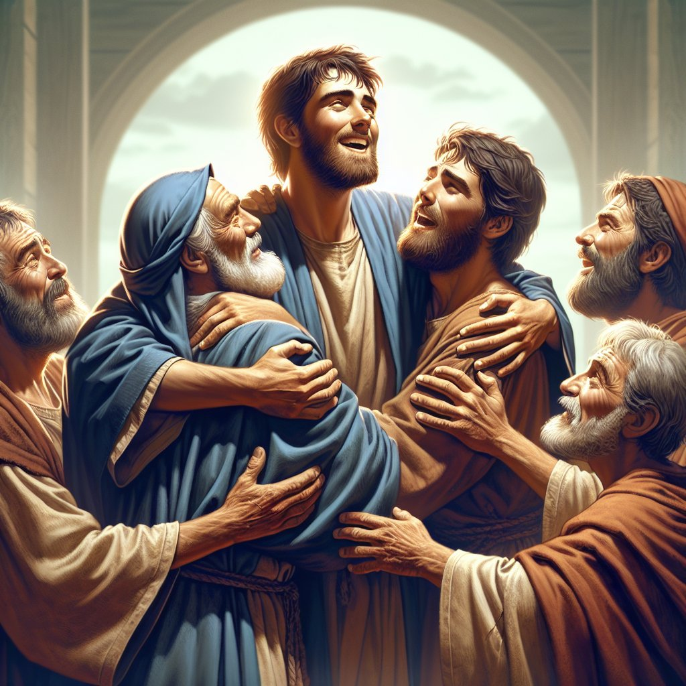
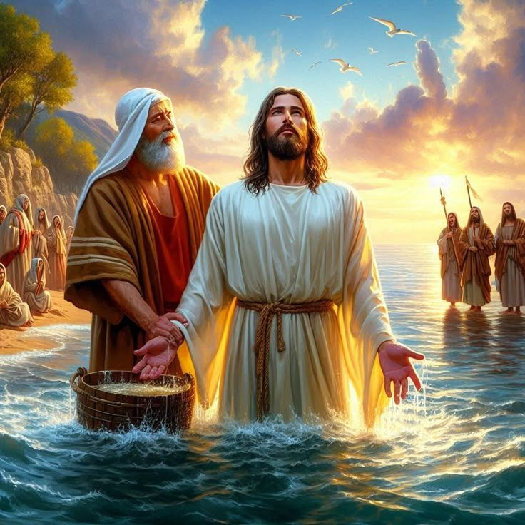
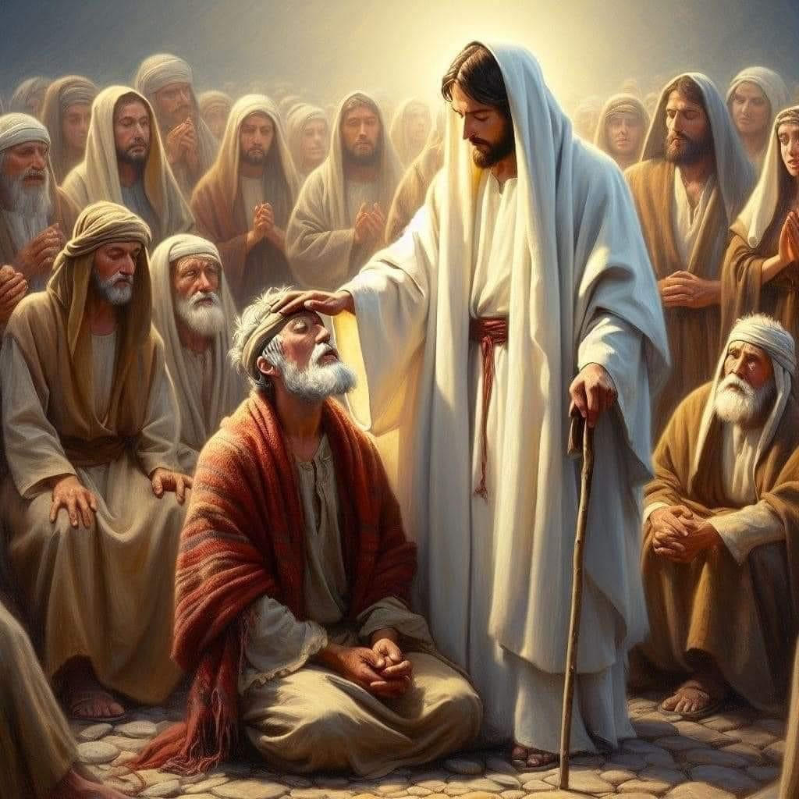

The Baptism of Jesus
The baptism of Jesus teaches us this truth — He joined us, lived among us, and made us children of God. Let’s walk with Jesus every day, living as part of His team, and let our lives show His love to the world. “To walk with Jesus is the greatest honor of all.”
The Baptism of Jesus

Like Joining a Team
அணியில் சேர்ந்தது போல
Have you ever played on a team where everyone wore the same color uniform? It feels great to belong — because everyone has the same goal and the same purpose! In the same way, Jesus showed that He is with us — He joined our “team” to say, “I am one of you.” His baptism was the sign of that! Let’s see how we can also show that we belong to Jesus’ team.
நீங்கள் ஒருபோதும் ஒரே வண்ண உடை அணிந்த குழுவில் விளையாடியதுண்டா? அந்த குழுவில் இருப்பது பெருமையாக இருக்கும் — ஏனெனில் அனைவருக்கும் ஒரே இலக்கு, ஒரே நோக்கம்! அதேபோல், இயேசுவும் நம்மைச் சேர்ந்தவராக, “நான் உங்களோடு இருக்கிறேன்” என்று காட்டினார். அவரது நீராட்டம் அதற்கான அடையாளம்! இப்பொழுது நாம் இயேசுவின் அணியில் இருப்பதை எப்படி காட்டலாம் என்று காணலாம்.
God’s Call through John the Baptist
யோவான் மூலம் வந்த தேவனுடைய அழைப்பு
Long ago, God sent John the Baptist to Judea to help people prepare for the coming of Jesus. John preached to the crowds about living the kind of life that pleases God: “If you have two coats, give one to the poor.” “If you have extra food, share it with the hungry.” “Don’t cheat or harm anyone — live honestly.” John’s message was clear — Loving God sincerely means living by His commands.
பண்டைய காலத்தில், தேவன் யோவான் நீராட்டியாரை யூதேயாவில் அனுப்பினார் — மக்கள் இயேசுவுக்காக தயார் ஆகும்படி. யோவான் மக்களிடம் தேவன் விரும்பும் வாழ்க்கையைப் பற்றி போதித்தார்: “இரண்டு ஆடைகள் இருந்தால் ஒன்றை ஏழைகளுக்குக் கொடுங்கள்,” “பணம் இருந்தால் பசியோனருக்குக் கொடுங்கள்,” “யாரையும் துன்புறுத்தாதீர்கள், நியாயமாக நடந்து கொள்ளுங்கள்.” அவர் கூறியது — “தேவனை மனதார அன்பு செய்வது, அவரது கட்டளைகளைப் பின்பற்றுவது போலவே முக்கியம்.”

The People Repented
மக்கள் மனம் திருந்தினர்
Many people were deeply moved by John’s preaching. They confessed their sins and came to the Jordan River to be baptized. That baptism was a symbol — “We are leaving behind our old, sinful life and beginning a new life that pleases God.” John baptized those who truly loved God and wanted to change their hearts.
மக்கள் யோவானின் வார்த்தைகளால் ஆச்சரியப்பட்டார்கள். பலரும் தங்களின் பாவங்களுக்கு மனம் திருந்தி, யோவானிடம் யோர்தான் நதியில் நீராட்டு பெற வந்தார்கள். அந்த நீராட்டம் ஒரு குறியீடு — “நாம் பழைய வாழ்க்கையை விட்டுவிட்டு, தேவனுக்குப் பிடித்த வாழ்க்கையை ஆரம்பிக்கிறோம்.” யோவான் தேவனை நேசிக்கும், மாற்றமடைந்த இதயமுள்ளவர்களுக்கு நீராட்டம் கொடுத்தார்.
Jesus Comes to Be Baptized
இயேசு நீராட்டு பெற வருகிறார்
One day, Jesus came to John and said: John was shocked! He knew that Jesus was sinless. So he said: “I should be baptized by You — and yet You come to me?” But Jesus gently replied: “Let it be so now; it is proper for us to do this to fulfill all righteousness.” John agreed — and he baptized Jesus in the Jordan River.
ஒருநாள் இயேசு யோவானிடம் வந்து சொன்னார்: “எனக்கும் நீராட்டு கொடு.” யோவான் அதிர்ச்சியடைந்தார்! அவர் அறிந்தார் — இயேசு பாவமற்றவர். அதனால் அவர் சொன்னார்: “நீயே எனக்கு நீராட்டு கொடுக்க வேண்டியவர்! ஆனால் நீ எனக்கிடமா வருகிறாய்?” இயேசு அமைதியாகப் பதிலளித்தார்: “இப்போது இப்படியே இருக்கட்டும்; இது தேவனுடைய நீதியை நிறைவேற்றுவதற்காகத்தான்.” யோவான் சம்மதித்து, இயேசுவுக்கு நீராட்டு கொடுத்தார்.
Heaven’s Testimony
வானத்திலிருந்து வந்த சாட்சி
As Jesus came up from the water, He prayed. Then the Holy Spirit descended like a dove and rested upon Him. And a voice came from heaven, saying: “This is My beloved Son, in whom I am well pleased.” This was God’s confirmation — Jesus is truly the Son of God.
இயேசு நீரில் இருந்து மேலே வந்தவுடன், அவர் பிரார்த்தனை செய்தார். அப்பொழுது பரிசுத்த ஆவி புறாவாக இறங்கி, இயேசுவின் மீது தங்கினான். பின்னர் வானத்திலிருந்து ஒரு சத்தம் வந்தது: “இவர் என் அன்பு மகன்; அவரில் நான் மகிழ்கிறேன்!” அது தேவனுடைய உறுதிமொழி — இயேசுவே தேவனின் மகன் என்பதற்கான சாட்சி.

The Beginning of Jesus’ Ministry
இயேசுவின் சேவை ஆரம்பம்
At that time, Jesus was about thirty years old. After His baptism, He began His public ministry. He called His disciples and started teaching, healing, and serving people. John also continued baptizing, but he rejoiced when people began to follow Jesus instead. He said humbly: “He must increase, but I must decrease.” John knew that his mission was to point people to Jesus — the One who would take away the sins of the world.
அப்பொழுது இயேசுவுக்கு சுமார் முப்பது வயது. அந்தப் பிறகு அவர் தமது சிஷ்யர்களைத் தேர்ந்தெடுத்து, தமது பொது ஊழியத்தைத் தொடங்கினார். இயேசுவின் சிஷ்யர்களும் மக்களுக்குப் நீராட்டு கொடுக்கத் தொடங்கினர். மக்கள் இயேசுவிடம் அதிகமாகச் சென்று வந்தனர். யோவான் இதனால் பொறாமைப்படவில்லை. அவர் மகிழ்ச்சியுடன் சொன்னார்: “இயேசு அதிகமாக உயர வேண்டும், நான் குறைய வேண்டும்.” அவர் அறிந்தார் — தான் சொல்லுவது மட்டும், ஆனால் பாவத்தை அகற்றுவது இயேசுவின் பணி என்பதைக்.

Jesus’ Sacrifice — Our Salvation
இயேசுவின் தியாகம் — நம்முடைய இரட்சிப்பு
Jesus’ baptism was more than an example — it was a sign that He came to stand with us. He, the Son of God, became like one of us — He grew, He served, He was baptized, to show that He shares our human journey. Later, He died on the cross, carrying the punishment for our sins. Because He won the victory over death, His victory became ours.
இயேசுவின் நீராட்டம் நமக்காக நடந்த அதிசயம்! அவர் வானத்திலிருந்து மனிதனாக வந்தார், நம்மைப்போல் வளர்ந்து, நீராட்டம் பெற்றார், ஏனெனில் அவர் நம் அணியில் இருக்கிறார் என்று காட்ட விரும்பினார். அதனால் தான் அவர் சிலுவையில் மரித்து, நம் பாவங்களுக்கான தண்டனையைத் தாங்கினார். அவர் நமக்காக வெற்றி பெற்றதால், அந்த வெற்றி நமக்கான வெற்றியாக ஆனது.
From His earliest days, Jesus showed us that true greatness begins in humility. He didn’t grow up in a palace, but in a small home filled with love and faith. He didn’t seek fame or wealth — He sought to do the will of His Heavenly Father. As He grew in wisdom and grace, His heart reflected perfect love — a love that would one day be shown on the Cross for all mankind.